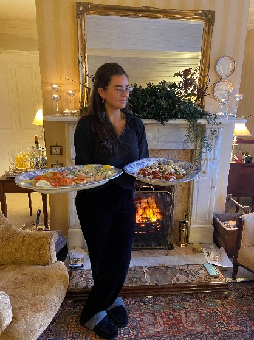

About Me
My name is Sarah. I'm a self-taught home cook with a lifelong passion for feeding people and bringing them together through food. Originally from Waterford and based in Dublin, cooking has always been central to my life. From family gatherings that revolved around the table, to quiet Sunday afternoons spent filling the fridge with homemade staples, I find a way to bring the joy and gift of food into everything I do. During COVID, I found myself cooking daily for family who had moved back home, and my love for creating comforting meals deepened into something more purposeful. When my sister-in-law had her baby, the only thing I wanted to give her was food made with care and love — enough to ease those first few chaotic weeks. I believe food is a gift — one that nourishes, connects, and comforts. That's the spirit behind Gooseberry Kitchen: real food for real life, made with heart.
